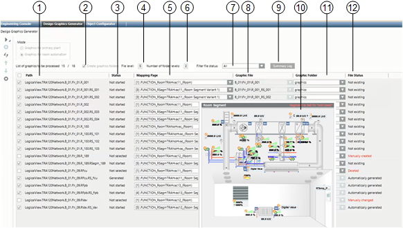

Workspace Room Graphic Generator
The graphics generator generates room mapping graphics in lieu of the existing room templates. The pages are generated based on existing rooms and room segments that are available on the Desigo automation station and set up on standard applications. For RC-specific applications, the corresponding room mapping graphics and associated functions must be available prior to generation.
Additional instructions are available in section Step-by-step.

1 | Path Displays all segments that were taken over from the logical view to the workspace. | 2 | Create a graphic folder The corresponding folders are created for selected check boxes. |
3 | State Displays the following process states: | 4 | File levels Defines how many levels are required for the file name. Once defined, do not change since the displayed data builds on these parameters. If changes are nevertheless necessary, select Advanced settings |
5 | Mapping page Displays the selected mapping page. You can change all mapping pages at one time with a multiple selection (CTRL + A). | 6 | Number of folder levels The number of folder levels defines how many levels are created from the information Path below the Graphic folder. The selected level is displayed in the Graphic file column. |
7 | Filter file status The list can be filter by File status in the workspace. A graphic page is generated for only the information displayed in the list. | 8 | Graphic file Displays the graphic file name based on the settings from File level and Number of folder level. |
9 | Summary Log Displays the detailed information as per the listed action Create or Delete. | 10 | Segment preview Displays a preview of the graphic page to be created. |
11 | Graphic folder The graphic page is generated below the selected folder based on the folder levels. | 12 | File status Displays the current state of a room on the created graphic page. See below for more information. |
 to select.
to select.
Interaction of the File Level with the Folder Level
The dependencies of parameters File level and Folder level are outlined in the following tables as an example. The structure is set up based on the technical address and the number of available hierarchy levels Logical.RoomAuto.B_1.Flr_1.RFcu.RSegmFcu.
Example with a Change of File Level | ||
File levels | Folder level | Folder\ |
6 | 3 | B_1\Flr_1\RFcu\ |
3 | 3 | Logical\Room_Auto\ |
1 | 3 |
|
Example with a Change of Folder Level | ||
File levels | Folder level | Folder\ |
6 | 3 | B_1\Flr_1\RFcu\ |
6 | 2 | Flr_1\RFcu\ |
6 | 1 | RFcu\ |
Example with change of file level and folder level | ||
File levels | Folder level | Folder\ |
6 | 3 | B_1\Flr_1\RFcu\ |
4 | 2 | Room_Auto\B_1_\ |
2 | 1 | Logical\ |
Detailed Information in the File Status Column
File Status of the Graphic Pages | |
Status in the graphic data base | Description |
None | There is no graphic file for this room. NOTE: This information is unavailable on existing projects due to the lack of a timestamp. |
Automatically generated | The graphic page was generated with the graphic generator and has not changed. |
Manually generated | The graphic page was manually generated (not with the graphic generator). |
Manually changed | The graphic page was generated and later changed with the graphic generator. |
Deleted | A manually or automatically generated graphic page was deleted. |
NOTICE

Prevent overwriting graphic pages
The check box is cleared on the graphic page as soon as a graphic page manually creates, changes, or deletes a state. It can be manually re-selected. Selecting the check box to the left of the Path column selects all check boxes so that existing graphic pages can be overwritten. As a consequence, never select this check box if manually changes were made to the graphic pages.